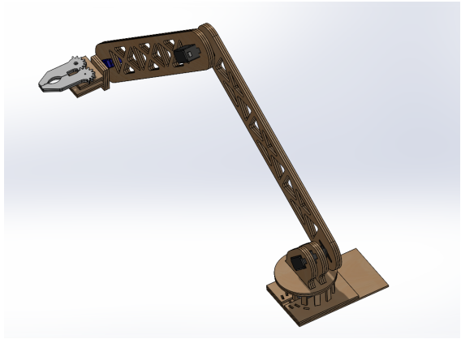
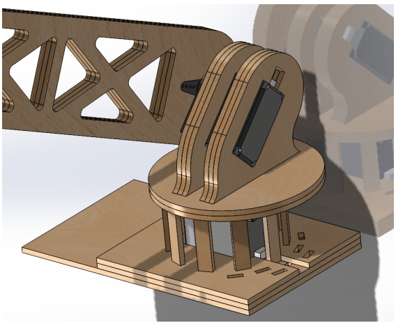
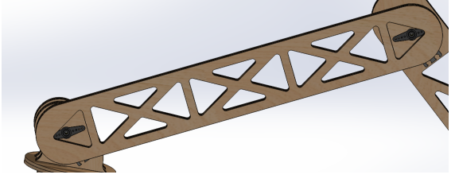
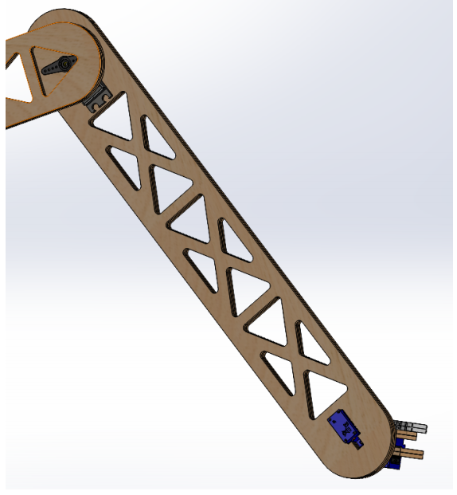
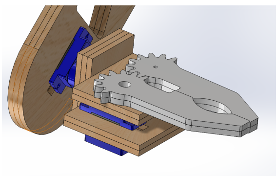
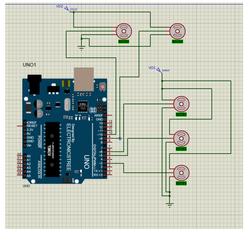

Project overview
This mechatronics project examines the modeling and design of an articulated robotic manipulator. The supplied technical report presents homogeneous transformations for forward kinematics, a planar inverse-kinematics derivation, mechanical CAD views of the arm, and Arduino-based servo control code. The accompanying files include a MATLAB script and a Proteus circuit project.
The kinematic description focuses on a three-joint manipulator model; the provided Proteus diagram shows five servo symbols, including additional functions beyond the three modeled joints.
Mechanical design and components
The SolidWorks assembly shows a rotating base, structural links with triangular cut-outs, and a geared end effector. The following are original figures supplied from the project documentation.




Forward kinematics
Forward kinematics determines the end-effector pose from a prescribed set of joint variables. The report develops rotation and translation matrices and combines link transformations to describe the motion of the manipulator.
The expression is a conceptual summary of the transformation-chain method; refer to the report for the specific matrices and definitions.
Inverse kinematics
Inverse kinematics works in the opposite direction: given a desired end-effector position, solve for candidate joint variables. The report presents a two-link planar derivation as part of the mathematical development. A feasible solution also needs joint-limit and reachability checks.
Electronics and control

Arduino code for servo control and a Proteus project are included in the supplied files. The circuit is evidence of the planned/simulated control arrangement; it does not, by itself, establish hardware performance.
Motion demonstrations — videos to be added
Results and verification status
The files include MATLAB code and logged numerical outputs. Some reported verification results require further checking, including joint-limit warnings and inconsistent coordinate extraction in the script. Accordingly, this page does not present the controller or inverse-kinematics calculations as experimentally validated.
Project status: CAD, analytical modeling, source code, and circuit documentation are available. Fabrication and physical testing status have not been independently confirmed.
Project documentation
Read the course report for the mathematical derivations, supporting figures, and source-code appendices.
View project report (PDF)Source: team course-project documentation supplied by the author. Figures and text reflect the shared project materials. Contributions of individual team members should be identified before making individual-work claims.
Motion demonstrations
The following recordings show the forward- and inverse-kinematics motion demonstrations. They are demonstrations of movement, not independent proof of physical accuracy or controller validation.